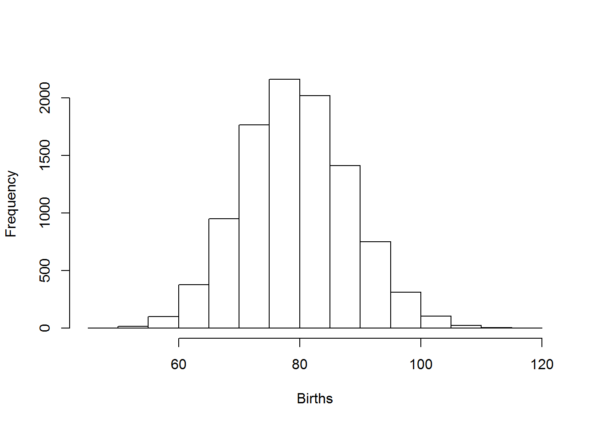

Lab 5: Intro to stochastic models (short lab!)
NRES 470/670
Feb 15, 2017
In this lab we will continue to add complexity (and biological realism) to our population models in InsightMaker. Among the concepts we will play around with are parameter uncertainty, demographic stochasticity and environmental stochasticity.
Exercise: dealing with uncertainty and stochasticity
Now we are going to shift focus from age-structured population models to stochasticity and uncertainty. We haven’t gotten to this in lecture yet, but I wanted you to have a chance to start playing around with these concepts in lab.
We will go into more detail in lecture, but here are the concepts we need for this lab:
- What if we don’t have enough data to specify our model (always the case!)? Another way of saying this is that we lack sufficient knowledge to parameterize our model. We can characterize this type of uncertainty as a confidence interval or simply upper and lower bounds. Some ways this uncertainty could be represented include:
\(b = [1.1,1.9]\) –or–
\(b = 1.5 \pm 0.4\)
The tool we use to deal with this type of uncertainty is called uncertainty analysis, or sensitivity analysis. Basically, we run the model for the extreme possible values (lower and upper bounds) and see what happens to our study system (e.g., does the population go extinct? decline?).
- Second, we usually can’t predict whether an individual will live or die, breed or not breed (whether an individual will “get lucky” so to speak!)? We might know the per-capita probability of breeding, or the probability of dying, or the per-capita rate of offspring production, or the probability of a given offspring being female. But when it comes to projecting exactly who lives and dies, who gives birth and who doesn’t, how many females are born, we just can’t know for sure. In population ecology this type of uncertainty is called demographic stochasticity. In this case, the way we deal with this is we make the birth and death process stochastic (that is, we use a random-number generator!).
For the number of births in a population, we usually use a Poisson distribution. The Poisson random number generator only produces whole numbers (we don’t like fractional individuals anyway) and doesn’t produce negative numbers. This makes it a good way to model births.
\(Births = Poisson(b*N_t) \qquad \text{(Eq. 5)}\)
For example, let’s imagine population size is 100 and the birth rate is 0.8. Here is the distribution of Births:
hist(rpois(10000,(100*0.8)),main="",xlab="Births")
Deaths are usually modeled using a Binomial distribution. The Binomial random number generator only produced whole numbers (which we like) and can only produce numbers that are greater than 0 and less than the total population size. These properties make it good for esimating mortalities!
\(Deaths = Binomial(size=N_t,prob=d) \qquad \text{(Eq. 6)}\)
Let’s imagine population size is 100 and death rate is 0.2. Here is the distribution of deaths:
hist(rbinom(10000,100,0.2),main="",xlab="Deaths")
- Third, we usually can’t predict whether next year or the year after will be a good one or a bad one- that is, whether the vital rates will be more or less optimal year-to-year (whether a population will “get lucky”, so to speak). In population ecology this is called environmental stochasticity. In this case, we make the vital rates stochastic (i.e., using a random number generator).
For this type of variability, we often use a Normal distribution or a uniform distribution. These random number generators are not constrained to be whole integers, nor are they constrained to be positive.
For example, let’s imagine birth rate \(b\) varies between 0.8 and 1.7. Here is the distribution of birth rates from a uniform random number generator:
hist(runif(10000,0.8,1.7),main="",xlab="Per-capita birth rate")
Or what if our mean birth rate is 1.1, with a standard deviation of 0.4:
hist(rnorm(10000,1.1,0.4),main="",xlab="Per-capita birth rate")
In general, we use a normal distribution if we want our random numbers to have a central tendency (humped, or normal distribution) or if we want all possibilities to be equally probable (uniform distribution).
Now let’s get to the actual lab activity!
Start with a basic exponentially growing population that looks something like this:

Set Birth rate equal to 0.4 and Death rate equal to 0.3. Set initial abundance at 10. Under the “Settings” menu set the model to run for 10 years. Make sure your Population stock can not go negative (this is a setting in the configurations panel). Hit “Simulate”- you should see exponential growth!
What if we have imperfect knowledge about birth rate. The data we have are consistent with a birth rate \(b\) as low as 0.2 and as high as 0.5. Run the model with the lowest and the highest possible birth rate. Now use the “Compare Results” tool (under the “Tools” menu in the upper right corner…) to visualize the range of possible population growth trajectories that would be possible given our uncertainty about birth rate.
4a. Provide the plot you just made in your write-up. What is the range of possible final abundances after 10 years? Can we conclude that the population growth rate is positive in this population?
4b. Another way to do uncertainty analysis is to use a uniform distribution to represent the range of uncertainty about the parameter value – in this case, we define Birth rate as a uniform random variable with minimum of 0.2 and maximum of 0.5. We can do this in InsightMaker in one of two ways. One is to define birth rate like this:
Rand(0.2, 0.5)and the other is to define birth rate like this:
Fix(Rand(0.2, 0.5))The next three questions relate to comparing these two methods.
4c. Try both of these methods. What is the difference between these two methods? Explain your answer.
4d. Use the “Sensitivity Testing” tool (in the “Tools” menu, upper right corner) to run the model 50 times using each of the two methods described above. Choose [Population] as the “Monitored Primitive” (otherwise use the default settings). Run the sensitivity testing module (using the “Run Analysis” button) and provide these two resulting plots as part of your write-up (one plot for each of the two methods). Look at the range of final abundances in the two plots. Which method results in the most uncertainty about the final abundance (after 10 years)? Can you explain this difference? (this last part is challenging, but give it a try!).
4e. Let’s think through the problem one more time- we are uncertain about the true value of the per-capita birth rate, , \(b\), for a rare species. The birth rate could be anything from 0.2 to 0.5 - we really can’t say! Given this uncertainty, we want to know what the abundance will be after 10 years. If you were tasked with evaluating this question hich of the two plots you generated in 4d. would you
Demographic Stochasticity
- Set Birth rate back to 0.4. Hit “Simulate”- make sure you still see exponential growth!
- We will use a Binomial distribution to represent the number of mortalities. That is, we flip a coin the same number of times as there are individuals in the population. If the coin comes up heads, then the individual dies. In this case we are using a biased coin- it only comes up heads 30% of the time! The Binomial distribution essentially represents the number of times heads came up. To do this in InsightMaker, use the following formula for the Deaths flow:
RandBinomial([Population], [Death rate])In plain english: the number of deaths is equal to the number of “coin flips” that come out heads if the probability of getting heads is equal to [Death rate].
For the birth rate, we will use the Poisson distribution. The Poisson distribution is often use to represent births, because there could feasibly be more births than there are individuals currently in the population (e.g., if all individuals have two offspring!). However, the maximum number of “heads” is the total number of individuals. To do this in InsightMaker, use the following formula for the Births flow:
RandPoisson([Population]*[Birth rate])In plain english: the number of births is a Poisson-distributed random number with mean equal to [Population]*[Birth rate].
- Run the simulation. What does it look like?
- Use the “Sensitivity Testing” tool (in the “Tools” menu, upper right corner) to run the model 50 times. Choose [Population] as the “Monitored Primitive”.
- Change the initial abundance to 500 and re-run the “Sensitivity Testing” tool.
Q Is the effect of demographic stochasticity bigger at low or high abundances?
Environmental Stochasticity
- Set Births back to what it was before ([Population][Birth rate]), and do the same for Deaths*.
- We will use a Normal distribution to represent how the birth rate changes each year. This could represent climatic variablity – “good years” and “bad years”. The Normal distribution is commonly used for this type of variability- it is characterized by an average value (mean) and a variability measure (standard deviation). To do this in InsightMaker, use the following formula for the Birth Rate variable:
RandNormal(0.4, 0.4)Similarly, use the following formula for the Birth Rate variable:
RandNormal(0.3, 0.3)Use the “Sensitivity Testing” tool (in the “Tools” menu, upper right corner) to run the model 50 times. Choose [Population] as the “Monitored Primitive”.
Change the initial abundance to 500 and re-run the “Sensitivity Testing” tool.
Q Is the effect of environmental stochasticity bigger at low or high abundances?
1c) relative role of demographic and environmental stochasticity as populations get bigger 1d) effects of different stochastic probability distributions.
Checklist for Lab 4 completion
Please bundle all your responses into a single Word document and submit using WebCampus!
URLs for your InsightMaker models should be pasted in your lab submission (MS Word document). See details below…
- After you save the model you should see a link on the top left-hand corner, “Insight Access”. Click on that link, and a new window will pop up. Under “allow update access”, add a username (i.e., kevintshoemaker or waldenTA). click on the “Add User” button, and then click on “Submit”. Finally, copy and paste the URL into the Word document.
Due Feb. 24 at 11 am.
- Word document with short answers
- Exercise 1
- Short answer (1a.)
- Short answer (1b.)
- Short answer (1a.)
- Exercise 2
- Short answer (2a.)
- Short answer (2b.)
- Short answer (2c.)
- Short answer (2d.)
- Short answer (2e.)
- Short answer (2f.)
- Exercise 3
- Short answer (3a.)
- Short answer (3b.)
- Short answer (3c.)
- Short answer (3d.)
- Exercise 4
- Short answer (4a.)
- Short answer (4b.)
- Exercise 1